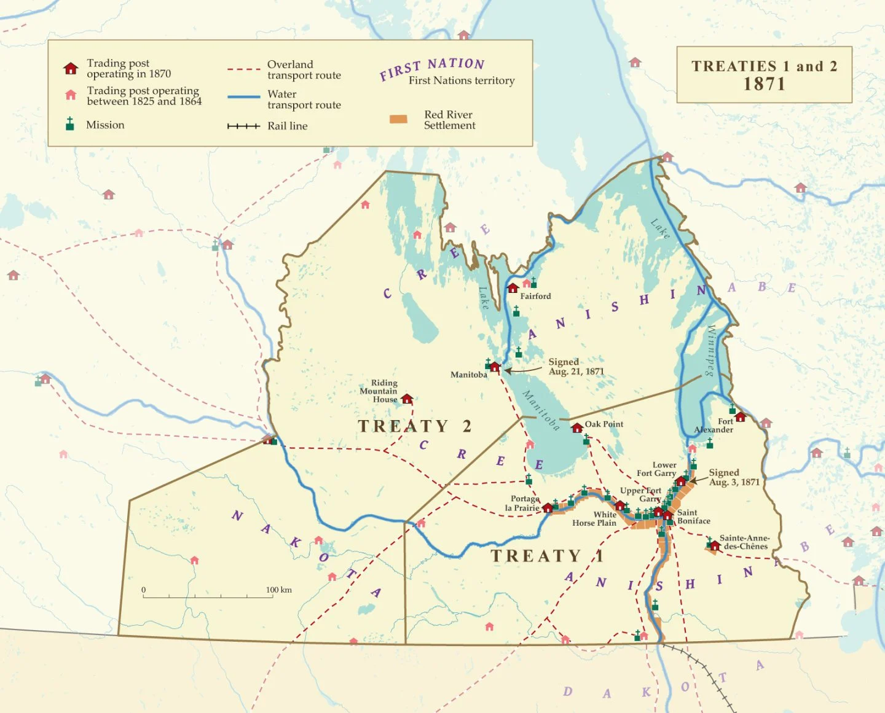
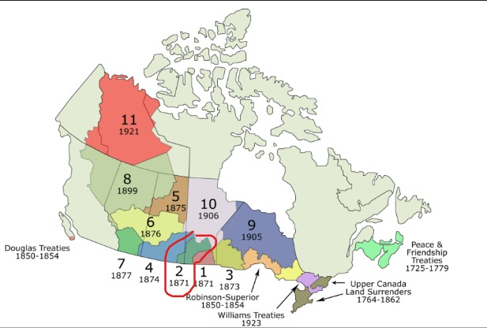

This is the map of Treaty 2 in Manitoba
Source for the map above
The green color part inside the red circle is Treaty 2 territory in Canada
Source for the map aboveThis is the map of Treaty 2 in Manitoba
Source for the map aboveThe green color part inside the red circle is Treaty 2 territory in Canada
Source for the map above